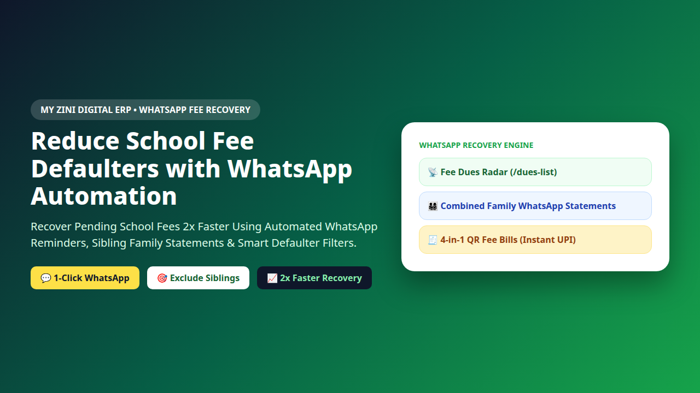
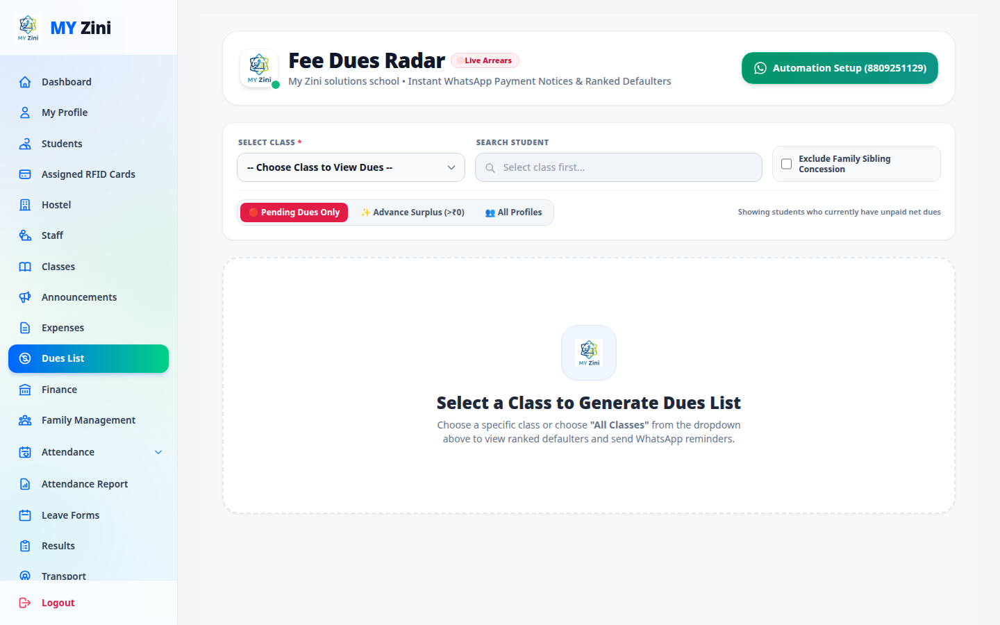
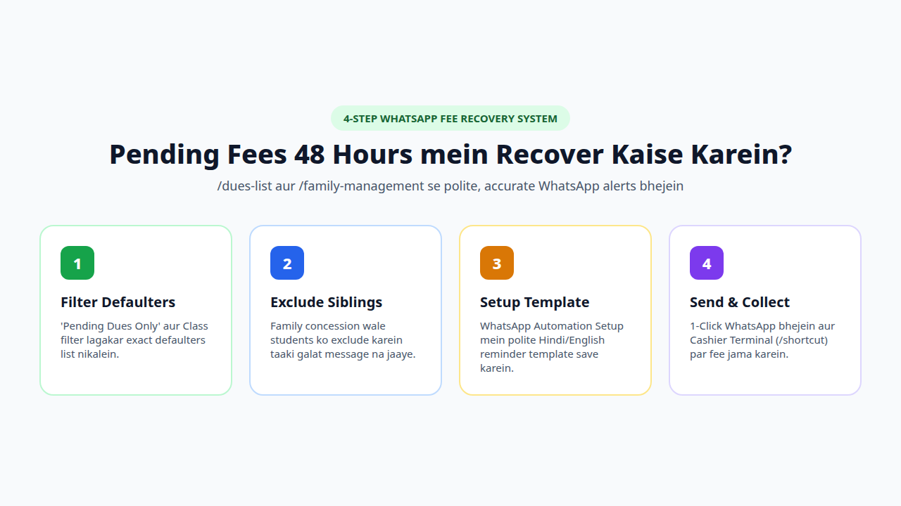
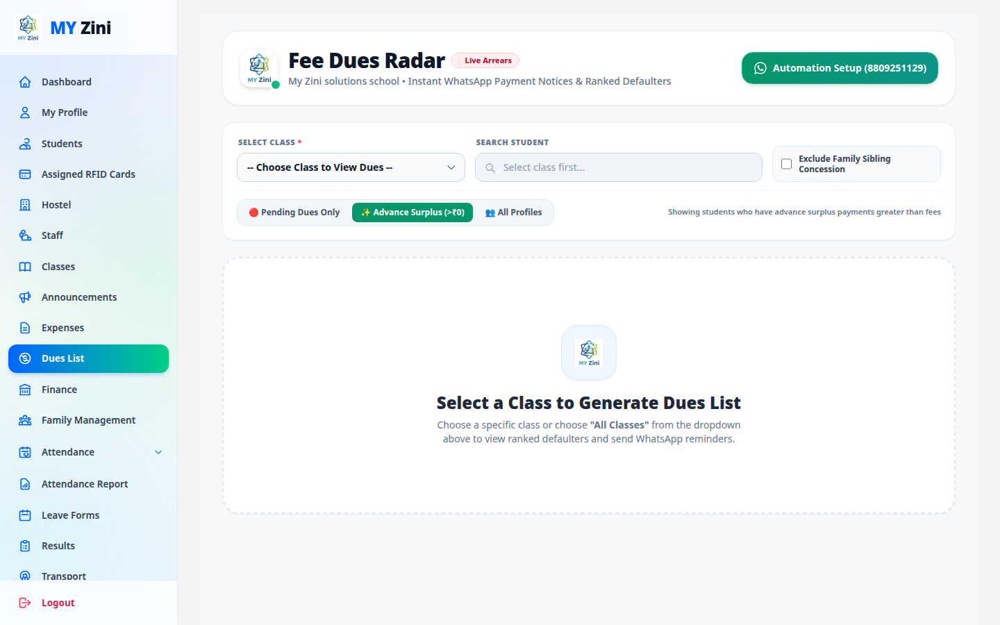
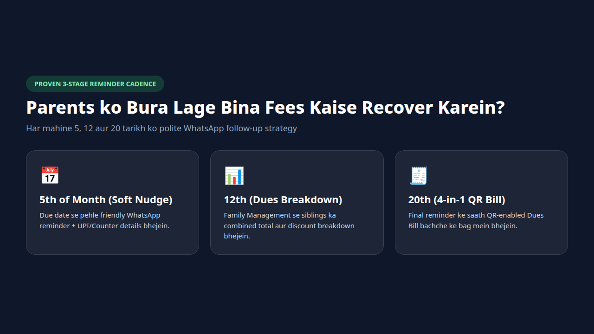
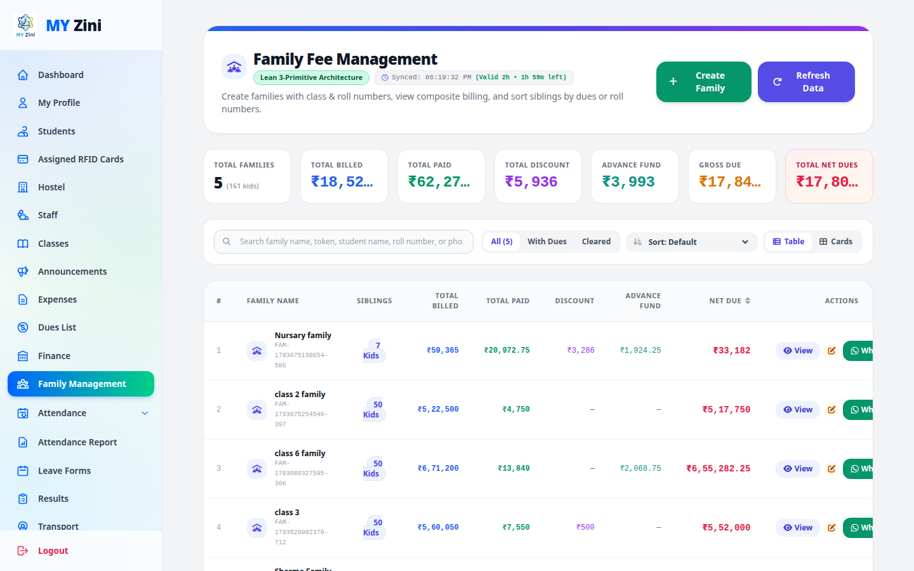
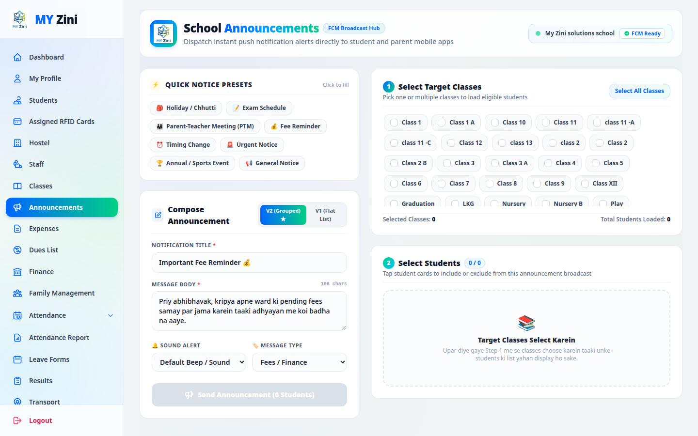
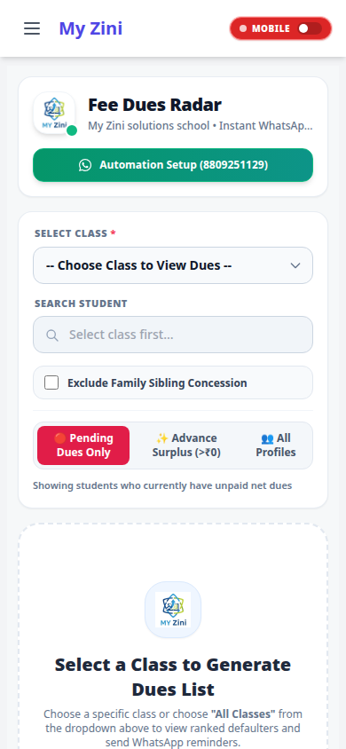
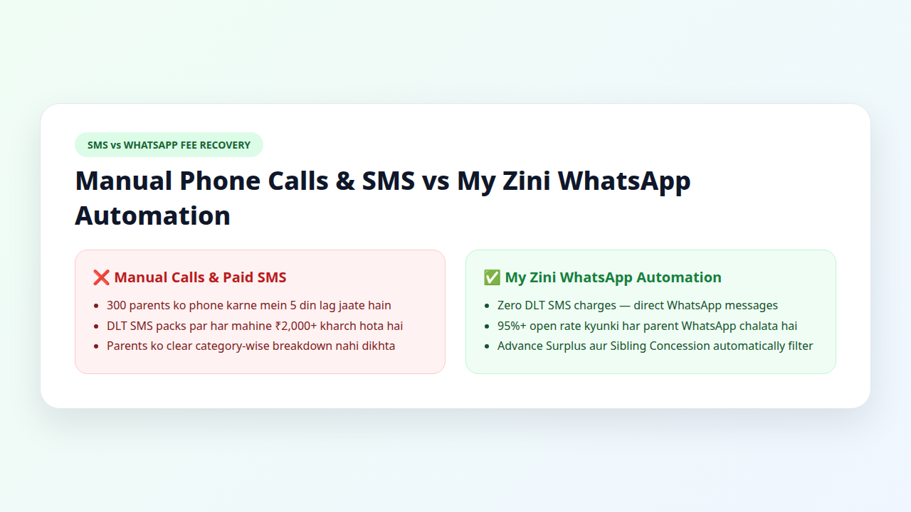

School Fee Defaulters ko WhatsApp Reminder Automation se 2x Fast Kaise Recover Karein? (Hinglish Guide)
Har school management ke liye sabse bada dard hota hai: Pending Fees Recovery! Teachers ko salary time par deni hoti hai, bus diesel aur bijli ke bills bharne hote hain, lekin kai baar 30%–40% parents sirf isliye fees time par nahi bhejte kyunki unhe sahi samay par polite reminder nahi milta — aur office staff ko 300 parents ko ek-ek karke phone karne mein poore hafte lag jaate hain. Isi samasya ko solve karne ke liye My Zini Digital ERP mein Fee Dues Radar (/dues-list), WhatsApp Automation Setup, Combined Family Statements (/family-management) aur Fee Reminder Push Notices (/announcements) diye gaye hain. Is Hinglish playbook mein humne live portal par in sabhi tools ko test karke poori strategy तैयार ki hai.

⚡ TL;DR — Quick Summary (AI & Reader Snapshot)
- Fee Dues Radar (
/dues-list):🌟 All Classes (Entire School Defaulters)ya class-wise ranked defaulters list dekhein. - Smart Accuracy Filters:
🔴 Pending Dues Only,✨ Advance Surplus (>₹0),👥 All Profiles, aurExclude Family Sibling Concessiontoggle. - Automation Setup:
Automation Setup (8809251129)se WhatsApp reminder templates aur instant dispatch configure karein. - 3-Channel Follow-Up: Individual WhatsApp (
/dues-list) + Combined Sibling WhatsApp (/family-management) + Mobile App Push Alert (/announcements→ 💰 Fee Reminder).
1. Fee Dues Radar (/dues-list) aur WhatsApp Automation Setup
/dues-list par aapko Fee Dues Radar — Live Arrears milta hai jiska mission hai: "Instant WhatsApp Payment Notices & Ranked Defaulters". Sabse pehle top par maujood Automation Setup button par click karke aap apna school reminder template configure kar sakte hain, aur phir SELECT CLASS * dropdown se 🌟 All Classes (Entire School Defaulters) chunn kar poore school ke defaulters ek list mein laa sakte hain.


2. Galat Parent ko Message Na Jaaye: Pending Dues Only vs Advance Surplus Filter
School fee recovery mein sabse badi galti tab hoti hai jab kisi aise parent ko reminder chala jaaye jinka paisa pehle se jama hai ya jo Advance Surplus mein hain! My Zini ERP mein iske liye 3 dedicated pills aur 1 smart toggle diya gaya hai: 🔴 Pending Dues Only (sirf unpaid net dues wale students), ✨ Advance Surplus (>₹0), 👥 All Profiles, aur Exclude Family Sibling Concession.

3. Proven 3-Stage Reminder Strategy: Family WhatsApp + Push Notice + QR Bills
Sirf ek baar message bhejne ke bajaye jab aap 5, 12 aur 20 tarikh ka 3-stage cadence follow karte hain, toh school ki monthly fee recovery 2x fast ho jaati hai — woh bhi bina kisi parent ko naraz kiye!



4. Mobile Recovery Mode aur Paid SMS se Tulna
Accountant ya Principal apne smartphone (390px) se bhi /dues-list kholkar pending defaulters ko WhatsApp reminders bhej sakte hain — bina kisi DLT SMS pack par paise kharch kiye!


Quick Reference Table: WhatsApp Fee Recovery Toolkit
| Tool / Module | Best Feature | Recovery Impact |
|---|---|---|
Fee Dues Radar (/dues-list) | All Classes + Pending Dues Only + Automation Setup | Ranked defaulters ko instant WhatsApp notice |
Family Management (/family-management) | Send WhatsApp Statement | 2–4 siblings ka ek combined bill parent ko |
Announcements (/announcements) | 💰 Fee Reminder Quick Preset | App users ko instant FCM push notification |
Generator Tools (/generator-tools) | 4-in-1 Fees Dues Bill (with QR) | Printed QR bill se turant UPI payment |
Frequently Asked Questions (FAQs)
1. Kya WhatsApp fee reminders bhejne ke liye alag se paid SMS/WhatsApp API kharidna padta hai?
Nahi! My Zini Digital ERP mein direct WhatsApp click-to-send aur Automation Setup built-in milta hai, jisse aap apne school ke official WhatsApp number se zero extra DLT ya per-SMS charges ke reminders bhej sakte hain.
2. Polite WhatsApp Fee Reminder message kaisa likhna chahiye?
Hamesha respectful aur clear format rakhein: "Namaste [Parent Name] ji, [Student Name] (Class [X]) ki [Month] tak ki total pending school fee ₹[Amount] hai. Kripya [Date] tak school counter ya UPI par jama kar dein. Dhanyavaad — [School Name]."
3. "Ranked Defaulters" ka kya matlab hai?
Fee Dues Radar sabse zyada pending dues wale students ko top par rank karta hai taaki accountant pehle bade arrears (jaise ₹15,000+ pending) par follow-up karke school ka cashflow turant improve kar sakein.
4. Agar kisi parent ke 3 bachche padhte hon toh unhe 3 alag messages na bhejne ke liye kya karein?
/dues-list par Exclude Family Sibling Concession toggle ON rakhein aur un parivaaron ko Family Management (/family-management) se ek hi Send WhatsApp Statement bhejein.
5. "✨ Advance Surplus (>₹0)" pill ka use kab hota hai?
Yeh un parents ki list dikhata hai jinhone poore saal ya agle mahinon ki fees pehle hi advance mein jama kar di hai. Inhe reminder list se alag rakhne se school ki reputation 100% professional bani rehti hai.
6. Kya 4-in-1 QR Fees Dues Bill aur WhatsApp Reminder ek saath use karna chahiye?
Haan! 5 aur 12 tarikh ko WhatsApp reminder bhejein, aur jo parents 20 tarikh tak payment na karein unke bachchon ke bag mein /generator-tools se print kiya hua QR-enabled 4-in-1 Dues Bill bhej dein — isse 90%+ recovery mahine ke andar ho jaati hai.
7. Kya Fee Dues Radar se data Excel/CSV mein export ho sakta hai?
Haan, aap defaulters list ko export karke Principal aur School Committee ki monthly review meeting mein present kar sakte hain.
8. Jab parent WhatsApp reminder dekh kar counter par paise dene aayein toh fastest billing kahan se karein?
Seedha Payments & Shortcuts Hub (Cashier Terminal) (/shortcut) par Class + Roll No. ⚡ Fetch karke 10 seconds mein receipt kaat dein — turant Dues List se unka naam hat jaayega!
9. Apne school ke liye My Zini Digital ERP kaise shuru karein?
Aap Digital ERP Registration Form par jaakar sirf ₹100 Registration Fee ke saath apna school register kar sakte hain aur WhatsApp Fee Recovery chalu kar sakte hain.
10. Kya Pass-out classes (e.g. Pass-Class 9) ke purane arrears bhi dikhte hain?
Haan! Live dropdown mein Pass-Class 9 jaise options bhi milte hain taaki aap purane session ke bache hue dues bhi track aur recover kar sakein.
11. Kya "Announcements" se bheja gaya Fee Reminder sirf unhi bachchon ko jaata hai jinki fees baaki hai?
Haan! /announcements ke Student targeting mode mein aap sirf selected pending-dues wale students ko tick karke 💰 Fee Reminder push notification bhej sakte hain.
12. Kya parent ko WhatsApp par message bhejne ke baad unka reply bhi aata hai?
Bilkul! WhatsApp two-way communication hai, isliye agar parent bole ki "Main Saturday ko jama kar dunga", toh aap Cashier Terminal ke NEXT DUE DATE aur CUSTOM NOTE / REMARKS mein woh promise date note kar sakte hain.
13. Kya WhatsApp fee reminder mein Transport aur Hostel dues bhi include hoti hain?
Haan, Fee Dues Radar student ke net outstanding balance ko calculate karta hai jisme Academic Tuition, Transport, Hostel, Other Fees aur Previous Year Arrears sab shamil hote hain.
14. Kya har class ke liye alag-alag din reminder bhejna chahiye?
Agar aapke school mein 700+ students hain, toh Monday ko Nursery–Class 3, Tuesday ko Class 4–7, aur Wednesday ko Class 8–12 ko reminders bhejna bahut systematic rehta hai taaki fee counter par ek saath bheed na lage.
15. Kya Staff ko bhi Fee Dues Radar ka access mil sakta hai?
Haan, Settings (/settings) mein jakar aap sirf authorized Fee Clerks ko View & Analyze Payment Reports permission de sakte hain.
16. Agar kisi parent ka mobile number galat ho toh kahan se update karein?
Aap /students mein us student ka profile edit karke turant sahi 10-digit WhatsApp number save kar sakte hain, jiske baad /dues-list mein naya number update ho jaata hai.
17. Kya Exam Admit Card issue karne se pehle Dues List check karna zaroori hai?
Haan! Exam se 10 din pehle All Classes Defaulters list nikalkar WhatsApp reminder bhejne se 85%+ parents exam se pehle hi apni pending fees clear kar dete hain.
18. Kya WhatsApp Fee Recovery se school ke cashflow par sach mein farq padta hai?
Bilkul! Schools ne dekha hai ki regular WhatsApp reminders aur QR-enabled 4-in-1 bills shuru karne ke pehle hi mahine mein pending arrears 40% se 60% tak kam ho jaate hain.
19. Ready-to-Use WhatsApp Fee Reminder Template #1 (5 Tarikh — Soft Nudge) kaisa hona chahiye?
Aap Automation Setup mein aisa polite message save kar sakte hain: "Namaste [Parent Name] ji, aapke ward [Student Name] (Class [X], Roll [Y]) ki [Month] tak ki total school fee ₹[Amount] pending hai. Time par fee jama karne se school activities aur transport suvidha smoothly chalti rehti hain. Aap counter par ya school UPI par jama kar sakte hain. Dhanyavaad — My Zini Solutions School."
20. Ready-to-Use WhatsApp Template #2 (12 Tarikh — Sibling / Family Statement) kaise bhejein?
Jab ek parivaar ke 2 ya 3 bachche hon, toh Family Management (/family-management) se aisa message jaata hai: "Namaste [Family Name], aapke sabhi linked bachchon ka combined fee summary: Total Billed ₹[Billed], Paid ₹[Paid], Sibling Discount ₹[Discount], aur Net Outstanding Due ₹[NetDue] hai. Kripya jald se jald jama karne ki kripa karein."
21. Ready-to-Use WhatsApp Template #3 (20 Tarikh — Exam & QR Bill Alert) kya likhein?
Mahine ke aakhri hafte mein firm lekin respectful tone rakhein: "Priya Abhibhavak, [Student Name] ki pichhle mahinon ki pending school fee ₹[Amount] abhi tak jama nahi hui hai. Humne bachche ke saath 4-in-1 QR Fee Bill bhi bheja hai — kripya QR scan karke ya office mein is Saturday tak dues clear kar dein taaki admit card aur attendance record update rahe."
22. Kya "All Profiles" pill mein ₹0 balance wale students bhi dikhte hain?
Haan! 👥 All Profiles select karne par class ke sabhi students dikhte hain — chahe unka balance ₹0 (Cleared) ho, Pending Dues ho, ya Advance Surplus ho. Lekin WhatsApp reminder bhejne ke liye hamesha 🔴 Pending Dues Only hi select rakhna chahiye.
23. Kya "SEARCH STUDENT" box mein roll number ya mobile number se defaulter dhoondh sakte hain?
Haan! Fee Dues Radar ke SEARCH STUDENT input mein aap student ka naam, roll number ya parent ka mobile number type karke kisi ek defaulter ka exact balance turant check kar sakte hain.
24. Agar kisi student ko Principal ne special fee discount diya hai toh kya woh Dues List mein update hota hai?
Haan bilkul! My Zini Digital ERP ek Single Source of Truth ledger par kaam karta hai. Jaise hi aap student profile ya Cashier Terminal par discount apply karte hain, Fee Dues Radar mein unka net due amount automatically kam ho jaata hai.
25. Kya "Automation Setup (8809251129)" mein school ka apna WhatsApp number link hota hai?
Haan, aap Automation Setup mein apna school sender configuration aur custom message template set kar sakte hain taaki har reminder aapke school ki official identity ke saath parents tak pahunche.
26. WhatsApp reminders bhejne ka din mein sabse sahi samay kaunsa hota hai?
School fee reminders bhejne ka best time subah 10:30 AM se 12:30 PM ya shaam 5:30 PM se 7:30 PM ke beech hota hai — is samay parents office break ya ghar par hote hain aur message padhkar turant UPI ya agle din school counter par payment kar dete hain.
27. Kya "All Classes (Entire School Defaulters)" load hone mein zyada time lagta hai?
Bilkul nahi! My Zini Digital ERP ka Fee Dues Radar fast cloud indexing use karta hai, isliye chahe aapke school mein 674+ students hon ya 2,000+ students, saari classes ki ranked defaulters list 1–2 seconds mein load ho jaati hai.
28. Kya kisi class teacher ko bhi unki apni class ke fee reminders bhejne ki duty di ja sakti hai?
Haan! Settings (/settings) ke Class-Wise Permissions mein aap class teacher ko sirf unki apni class ke liye View & Analyze Payment Reports access de sakte hain taaki woh PTM se pehle parents ko follow-up kar sakein.
29. Kya WhatsApp reminders bhejne se pehle school ka UPI QR code bhi message ya bill par diya ja sakta hai?
Haan bilkul! Jab aap Generator Tools (/generator-tools) ke 4-in-1 Fees Dues Bill use karte hain, toh har student ki slip par automatically dynamic UPI QR code print hota hai. Parents ghar baithe GPay, PhonePe ya Paytm se scan karke fees bhej sakte hain.
30. Agar koi parent galti se 2 baar payment kar de toh kya woh Advance Surplus mein dikhta hai?
Haan! Extra jama kiya gaya paisa automatically student aur family ke Advance Fund / Advance Surplus (>₹0) mein credit ho jaata hai, jo agle mahine ki tuition fee mein apne aap adjust ho jaata hai.
31. Kya WhatsApp Fee Recovery ka asar naye admissions aur parent trust par bhi padta hai?
100%! Jab parents ko har mahine clean, polite aur transparent WhatsApp breakdown milta hai (bina kisi rude phone call ya paper slip ke), toh unhe school ka management modern aur trustworthy lagta hai, jisse word-of-mouth admissions bhi badhte hain.
32. Kya school bus/transport fees ki pending dues par bhi alag se reminder bhej sakte hain?
Haan! Jab student ka Transport Fee /students aur /transport mein set hota hai, toh unka net outstanding balance Fee Dues Radar mein automatically include rehta hai, jisse aap ek hi reminder mein tuition + transport dues recover kar sakte hain.
33. Kya 100% digital WhatsApp fee collection audit-ready hota hai?
Bilkul! Har payment Finance Command Center (/finance) aur Data Center VAULT (/data-center) mein timestamp ke saath save hota hai taaki CA audit mein koi mismatch na aaye.
Monthly Action Plan: Zero Fee Defaulters Checklist
1. 1st of Month: Generate Dues
/shortcut → Apply Monthly Fees se sabhi classes par monthly fee apply karein.
2. 5th & 12th: WhatsApp + Family Statements
/dues-list aur /family-management se polite WhatsApp reminders bhejein.
3. 18th: FCM Push Fee Reminder
/announcements par 💰 Fee Reminder preset se pending students ko push alert bhejein.
4. 20th: Print 4-in-1 QR Dues Bills
/generator-tools se bache hue defaulters ke QR-enabled 4-in-1 bills print karke bhejein.
Pro Tip: Hamesha 🔴 Pending Dues Only aur Exclude Family Sibling Concession ON rakhkar hi WhatsApp reminders bhejein — isse har parent ko sirf unka exact verified amount hi dikhega aur school par bharosa badhega.